Deluxe
Grant
- King-Size-Bett
- 1,8 m Dusche mit Regendusche und Handbrause
- Obergeschoss
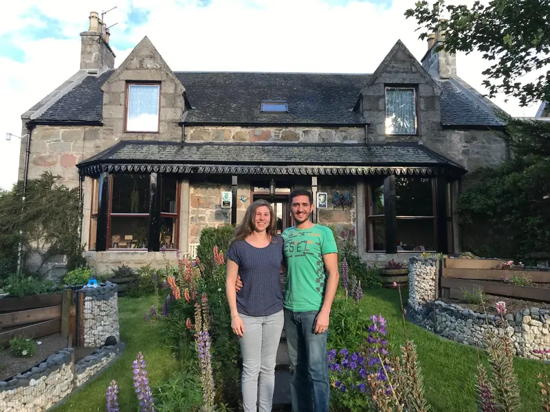

Sarah und Daniel heissen Sie willkommen in einem gemütlichen Guest House von 1868, ruhig gelegen in rund 2000 m² Garten und nur vier Minuten zu Fuss von der High Street.
Über uns
Sarah und Daniel heissen Sie in Grantown-on-Spey in den wunderschönen schottischen Highlands willkommen, im eleganten und doch gemütlichen Garden Park Guest House. Das Haus wurde 1868 gebaut und liegt ruhig in rund 2000 m² gepflegtem Garten, nahe beim Golfplatz von Grantown, dem Uferweg am Spey und den Pinienwäldern. Die High Street mit ihren Familiengeschäften, Restaurants und Pubs ist nur vier Minuten zu Fuss entfernt.
Grantown-on-Spey liegt im Cairngorms National Park. Der Ort verbindet Strathspey und Badenoch, Speyside, Moray, Nairnshire und die Cairngorms und ist damit einer der besten Ausgangspunkte für einen gemütlichen, längeren Aufenthalt.
Lizenz Home Sharing, Nr. HI-70000-R
Zimmer
Alle sechs Zimmer haben ein eigenes Bad, sind individuell eingerichtet und auf hohem Standard. Gute Betten, Zentralheizung und elektrische Wärmeunterbetten sorgen dafür, dass Sie gut schlafen. In jedem Zimmer gibt es einen Föhn, einen Fernseher und eine Auswahl an Tee und Kaffee. Einzelbelegung ist in jedem Zimmer möglich.
Deluxe

Superior

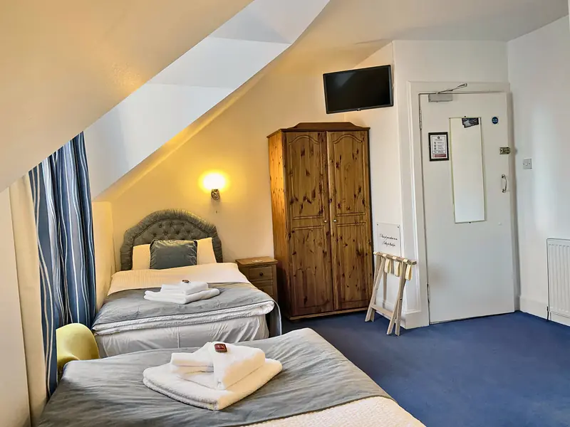
Zweibettzimmer mit zwei Einzelbetten
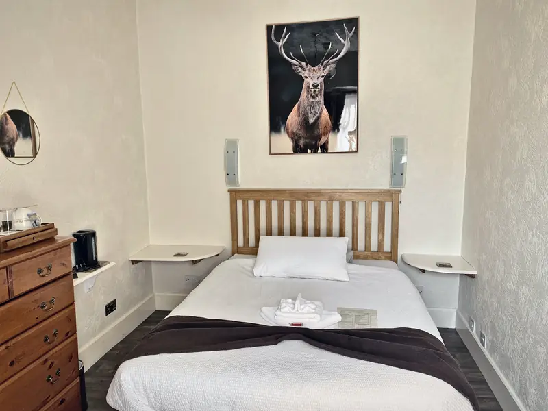
Doppelzimmer · Erdgeschoss

Zweibettzimmer mit zwei Einzelbetten · Erdgeschoss
Die Zimmerpreise hängen von Saison, Zimmer und Aufenthaltsdauer ab, und bei längeren Aufenthalten werden Sie von unseren Preisen vielleicht positiv überrascht. Die aktuellen Preise sehen Sie, wenn Sie die Verfügbarkeit prüfen.
Unser Cottage
Unser Ferienhaus zur Selbstverpflegung auf dem Grundstück des Garden Park, für zwei Erwachsene plus bis zu zwei Kinder bis 10 Jahre oder ein Kind bis 12 Jahre. Es liegt auf Strassenhöhe, hat eine Walk-in-Dusche, und unter dem erhöhten Doppelbett ist viel Platz für das Gepäck. Butterfly Cottage ist auch die einzige Unterkunft, in der wir Ihren Hund willkommen heissen können.
Lizenz Secondary Letting HI-70001-R
Fragen Sie uns nach Preisen für längere Aufenthalte, Angeboten ausserhalb der Saison und Gruppenpreisen. Für Familienfeste, Hochzeiten und andere Gruppenanlässe können Sie auch das ganze Haus für sich haben. Nehmen Sie einfach Kontakt mit uns auf und wir helfen Ihnen gern, Ihren Anlass in den Highlands zu planen.
Frühstück
Wir konzentrieren uns auf die zwei B, auf die es am meisten ankommt, Beds und Breakfast, also bequeme Betten und ein Frühstück von bester Qualität. Sie stellen Ihr Frühstück selber zusammen, und wir bereiten es frisch für Sie zu, serviert an Ihrem eigenen Tisch. Vegetarisch, vegan oder ganz ohne Eier ist kein Problem.
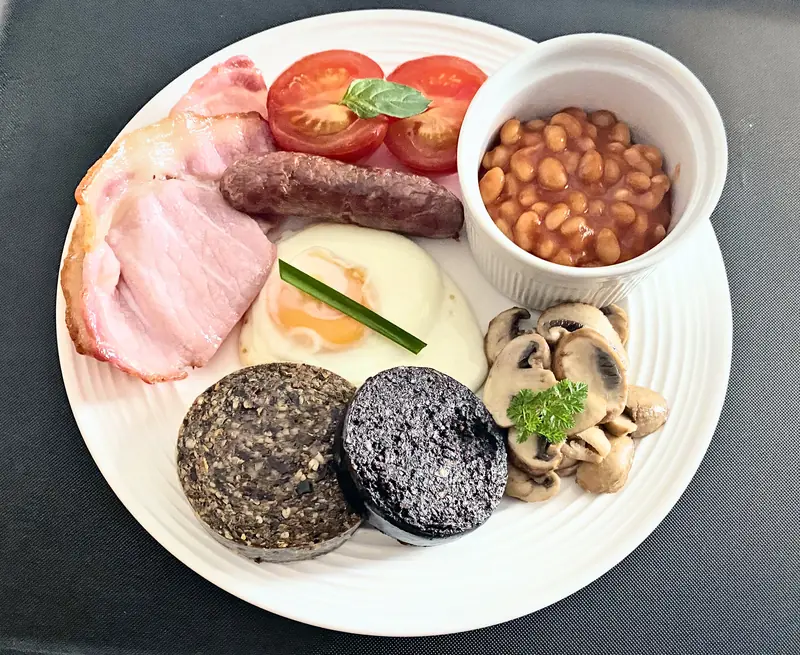


Während Ihres Aufenthalts
Nach einer langen Fahrt will niemand nochmals aus dem Haus. Darum gibt es unseren Wee Fancy Brügel zum Vorbestellen. Ein rustikales Schweizer Wohlfühlessen auf einem knusprigen, im Steinofen gebackenen Sauerteig-Baguette, in vier Varianten. Kein gewöhnlicher Snack, sondern eine richtige Mahlzeit für echten Hunger.
Montag bis Samstag, mindestens 24 Stunden vor der Ankunft vorbestellen, nur für Gäste des Garden Park und des Butterfly Cottage. Alle Details finden Sie im PDF, das wir mit Ihrer Buchungsbestätigung schicken.
Lust auf einen Kaffee nach einem Tag unterwegs? Für unsere Gäste machen wir Iced Coffee, Cappuccino, Latte Macchiato und Espresso.
Und wer ein kleines Stück Garden Park mit nach Hause nehmen möchte, findet bei uns ein paar kleine Souvenirs von Sarah und Daniel, vom Highland-Honig bis zu Garderobenhaken aus alten Whiskyfässern.

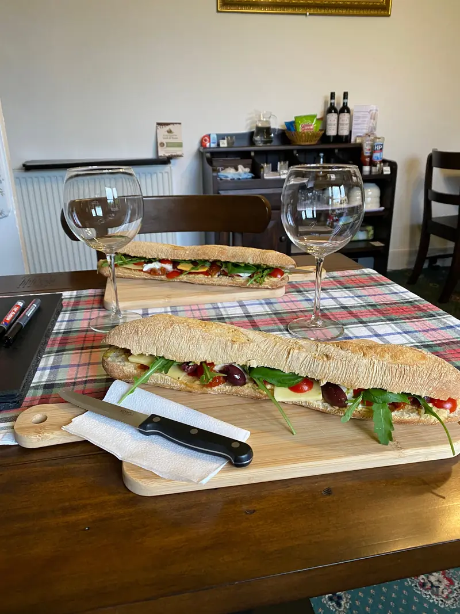

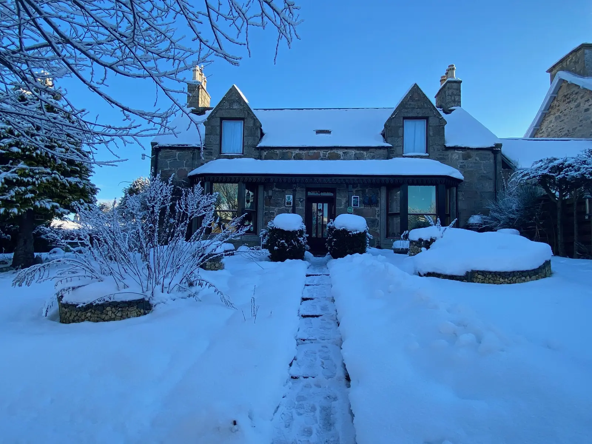
Angebote & News

Drei Generationen. Ein unvergesslicher Urlaub in Schottland.
Bringen Sie die ganze Familie für ein paar besondere Tage in den schottischen Highlands zusammen. Buchen Sie drei Zimmer für vier Nächte, und das dritte Zimmer für die Kinder (6 bis 11 Jahre) ist ganz gratis.
Mit eigenen Zimmern hat jeder seinen Platz. Und wenn Mama und Papa etwas mehr Ruhe möchten, können sie sogar das Butterfly Cottage zu ihrem eigenen Rückzugsort machen. Während die Grosseltern mit den Enkeln wertvolle Erinnerungen sammeln, geniessen Mama und Papa etwas verdiente Zeit zu zweit.
Ein bisschen mehr Platz, ein bisschen mehr Zeit zusammen und Erinnerungen fürs Leben.
Je nach Verfügbarkeit. Nur mit Vorausbuchung. Bitte schreiben Sie uns eine E-Mail, um Ihr Generation Getaway zu planen.
E-Mail schreiben26. – 30. Dezember 2026
Die Tage zwischen Weihnachten und Hogmanay. Die perfekte Zeit, um runterzufahren.
3 Nächte bleiben und nur 2 bezahlen, oder 4 Nächte zum Preis von 3, in unseren Zimmern MacDonald (Superior) oder Grant (Deluxe).
Zwischen Weihnachten und Hogmanay weiss sowieso niemand so genau, welcher Tag gerade ist. Warum also nicht in die schottischen Highlands abtauchen und ein paar Tage einfach geniessen, ohne irgendwo sein zu müssen?
Lange Spaziergänge durch die Anagach Woods, danach zurück in die warme Lounge, mit einem guten Buch einkuscheln oder gemütlich ein Brettspiel am Feuer spielen. Den Morgen mit einem richtigen Frühstück beginnen und die To-do-Liste konsequent zu Hause lassen.
Keine Pläne. Keine Eile. Einfach eine kleine Winterauszeit in den Highlands.
Angebot gültig für Aufenthalte vom 26. bis 30. Dezember 2026. Je nach Verfügbarkeit.
Verfügbarkeit für Twixmas prüfen26. Dezember 2026 – 4. Januar 2027
Am Donnerstag feiern. Am Freitag Zeit lassen. Das Wochenende geniessen.
Warum nach Hogmanay gleich nach Hause hetzen? Feiern Sie mit uns in Grantown-on-Spey und begrüssen Sie das neue Jahr ganz im Highland-Stil. Hogmanay fällt dieses Jahr auf einen Donnerstag, die perfekte Ausrede, um aus dem Fest ein langes Wochenende zu machen.
Grantown feiert normalerweise mit einem traditionellen Strassenfest auf The Square, nur ein paar Schritte von unserer Haustür entfernt. Kein Taxi, kein Anstehen, nur ein paar Minuten zu Fuss zurück in ein warmes, bequemes Bett.
Und das Beste? Am Freitagmorgen müssen Sie nicht gleich los. Geniessen Sie ein gemütliches Frühstück, entdecken Sie die winterlichen Highlands und machen Sie das Beste aus dem langen Wochenende.
Hogmanay feiern. Ausschlafen. Ein bisschen länger bleiben.
Wir haben vom 26. Dezember 2026 bis 4. Januar 2027 geöffnet.
Verfügbarkeit für Hogmanay prüfenDie Gegend
Grantown wurde im 18. Jahrhundert gegründet, ist die historische Hauptstadt von Strathspey und ein fast perfekter Ausgangspunkt in den Highlands für Tagesausflüge, Whisky, Natur und Küste. Seit 2003 gehört der Ort zum Cairngorms National Park, dem grössten Nationalpark Grossbritanniens.
Die Anagach Woods und der Speyside Way beginnen ein paar Minuten vor der Haustür, und wir sind das Guest House, das am nächsten am Weg liegt. Rothirsche, Otter, Delfine, Steinadler, Fischadler und Baummarder leben in der Gegend, und das RSPB-Zentrum am Loch Garten ist nur eine kurze Fahrt entfernt.
Neun Destillerien und eine Küferei am Malt Whisky Trail, darunter The Cairn, Grantowns eigene Destillerie. Mehr Informationen finden Sie auf maltwhiskytrail.com.
Acht Golfplätze in der Nähe, in Grantown, Carrbridge, Boat of Garten, Abernethy, Newtonmore, Kingussie, Aviemore und Craggan. Für Golfschläger und Schuhe haben wir einen abschliessbaren Abstellraum und einen Trocknungsraum.
Ballindalloch Castle, Cawdor Castle und das Schlachtfeld von Culloden erreichen Sie alle in weniger als einer Stunde. Das Grantown Museum ist gleich um die Ecke.
Mittag- und Abendessen bieten wir nicht an, aber mit jeder Buchung bekommen Sie ein PDF mit allen Restaurants und Cafés im Ort. Ob vegan oder mit Fleisch und Fisch, Grantown hat eine grosse Auswahl, und unsere persönlichen Lieblingsorte verraten wir Ihnen gern.
Fischen und Pirschen können wir während Ihres Aufenthalts mit einem lokalen Guide organisieren. Reiten, Ponytrekking, Vogelbeobachtung, Skifahren, Snowboarden und Wildwasserrafting gibt es alles in der Nähe.
Unsere interaktive Karte zeigt über 50 handverlesene Ziele und fertige Ideen für Tagesausflüge, in 8 Kategorien auf 4 übersichtlichen Karten.
Entdecken Sie die interaktive Karte von Strathspey & Badenoch, Speyside, den Cairngorms und der Küste von Moray.
Interaktive Karte öffnenNachhaltigkeit
Grantown-on-Spey ist wie gemacht dafür, ein bisschen länger zu bleiben. Von hier gehen die Tagesausflüge wie die Zacken eines Sterns in alle Richtungen, nach Speyside mit seinen Destillerien, nach Aviemore und in die Cairngorm Mountains, nach Tomintoul, Elgin, Nairn und an die Küste von Moray und nach Inverness, alles in weniger als einer Stunde. Sie packen einmal aus und verbringen Ihre Tage mit Entdecken statt mit Packen und Fahren.
Wir arbeiten eng mit Green Tourism zusammen und haben die Auszeichnung in Gold. Seit der Saison 2024 liefern Solarpanels auf der Süd- und Südostseite des Hauses Strom für den Garden Park, und wir haben alle Wassertanks ersetzt. Wer mit dem Elektroauto kommt, kann es an unserer Ladestation mit der App Tap Electric laden. Wir haben ausserdem einen eigenen Kräutergarten und einen bienenfreundlichen Blumengarten, kaufen wo möglich lokal ein, halten Verpackung und Abfall klein und reinigen, wo es geht, mit Dampf.
Jede zusätzliche Nacht bedeutet eine Wäsche weniger mit Bettwäsche und Tüchern. Das spart Wasser und Energie, und es kommt weniger Waschmittel ins Abwasser, das aufwendig gereinigt werden muss und am Ende wieder unser Trinkwasser wird. Und Sie haben Zeit, Grantown-on-Spey und die Cairngorms wirklich kennenzulernen, statt nur durchzufahren.
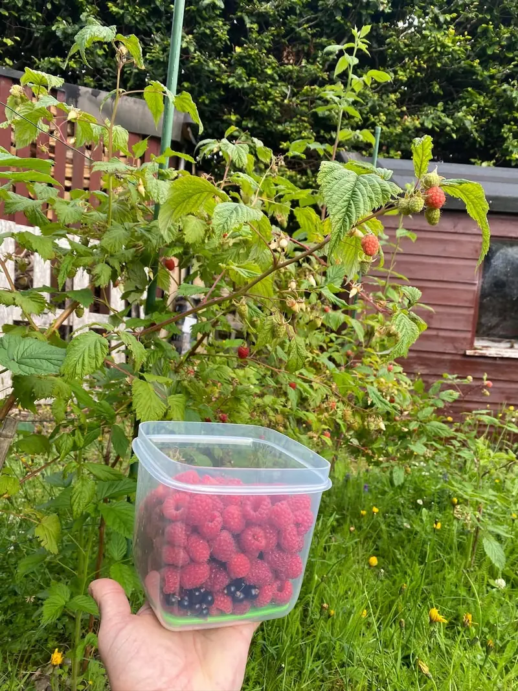
Gut zu wissen
Wir haben von März bis Oktober geöffnet und über Weihnachten und Neujahr vom 26. Dezember bis 4. Januar. Von November bis Februar ist das Haus geschlossen, weil unser altes Granithaus sehr lange braucht, bis es warm ist. Auf Anfrage öffnen wir das Haus im Winter für Gruppen ab sechs Personen und mindestens drei Nächte.
Buchungen werden mit einer Anzahlung für die erste Nacht pro Zimmer bestätigt. Wir nehmen Bargeld (GBP), Bankkarten, Banküberweisung und Stripe-Zahlungslinks, ganz kontaktlos.
Das Haus steht leicht erhöht, etwa 30 Meter von der Strasse, erreichbar über einen sanft ansteigenden Fussweg oder über 12 flache Stufen. Es wurde 1868 gebaut und ist nicht rollstuhlgängig. Mit Rollator oder Gehhilfe geht es gut, und wir hatten auch schon Gäste damit. Zwei Zimmer liegen im Erdgeschoss, Sutherland mit Walk-in-Dusche, Mathieson mit 15 cm Duschabsatz.
Sie reisen mit Ihrem Hund? Im Butterfly Cottage ist er herzlich willkommen, dort hat die ganze Familie Platz, um sich wie zu Hause zu fühlen. Die Gebühr beträgt £39 pro Buchung und Woche.
Trocknungsraum und abschliessbarer Abstellraum im Haus, und wir sind das Guest House, das am nächsten am Speyside Way liegt. Den Gepäcktransport zur nächsten Unterkunft können wir organisieren, fragen Sie uns einfach vor der Anreise.
In jedem Zimmer gibt es Tee und Kaffee, Pflegeprodukte im Bad, einen Fernseher und einen Föhn. Im Aufenthaltsraum stehen ein Fernseher und ein Holzofen für kältere Tage.
Galerie
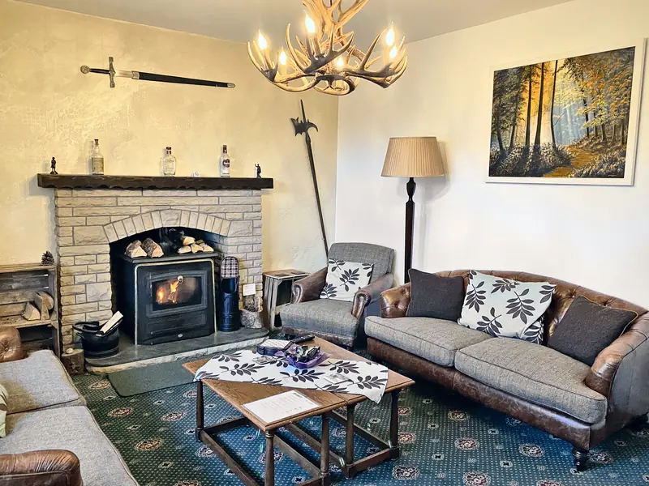

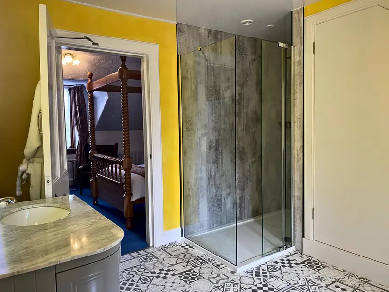


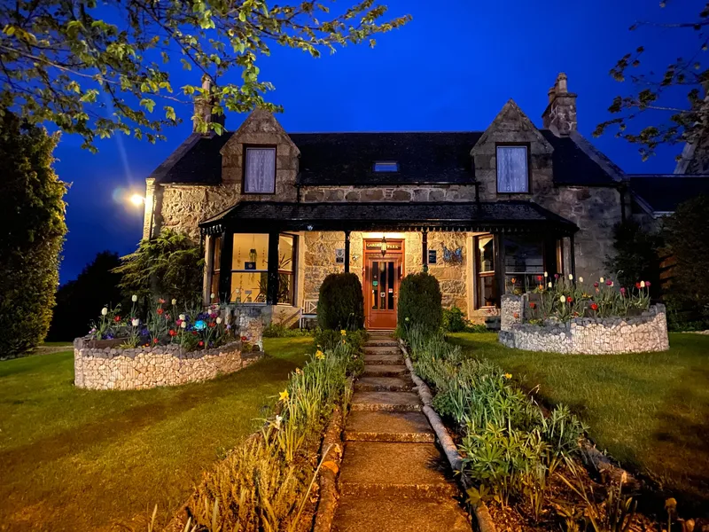


Gastgeber
Sarah und Daniel freuen sich, Sie im Garden Park willkommen zu heissen. Wir helfen gern mit Ideen aus der Gegend, praktischen Reisetipps und unseren persönlichen Lieblingsorten, damit Sie das Beste aus Ihrem Aufenthalt in den Highlands machen.
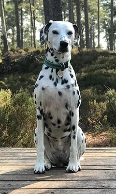
Und Lucy? Unsere Dalmatinerin lebt mit uns in unserem privaten Teil des Hauses und kommt nur sehr selten ins Guest House. Wenn Sie sie kennenlernen möchten, fragen Sie einfach, dann kommt sie gern kurz Hallo sagen.
Wir sprechen Englisch, Deutsch, Schweizerdeutsch und Italienisch.
Gästebewertungen
5/ 5
Aus über 240 geprüften Gästebewertungen · alle lesen
“Spotlessly clean, peaceful location just a very short walk to facilities. Host very welcoming and helpful.”
“The breakfast was first-class, the hosts were welcoming and friendly.”
„Würden euch jeder Zeit weiter empfehlen. Es waren schöne Tage, die wir sehr genossen haben.“
„Wir vermissen euer Frühstück mit der tollen Auswahl und dem selbstgebackenen Brot. Und eure Herzlichkeit …“
 Traveller Review Award 2026Booking.com, 10 von 10.
Traveller Review Award 2026Booking.com, 10 von 10.
Wer direkt bucht, zahlt keine Plattform-Kommission und hat direkt mit uns zu tun.
Verfügbarkeit prüfenKontakt
+44 1479 873235
relax@garden-park.co.uk
what3words include.milky.baths
Inverness und die Küste von Moray sind mit dem Auto weniger als 50 Minuten entfernt. Ob Sie mit Auto, Fähre oder Zug kommen oder ohne Auto mit Bus und Taxi unterwegs sind, alles finden Sie auf unserer interaktiven Karte.
Anreise nach Grantown-on-Spey